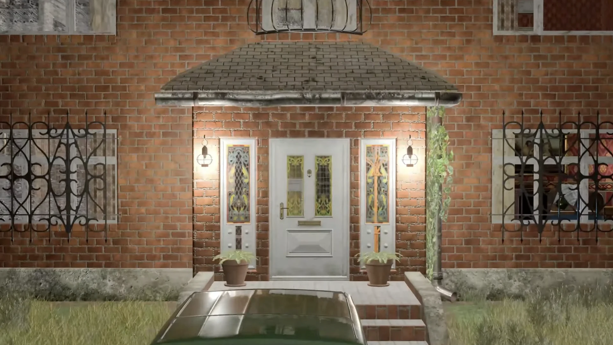
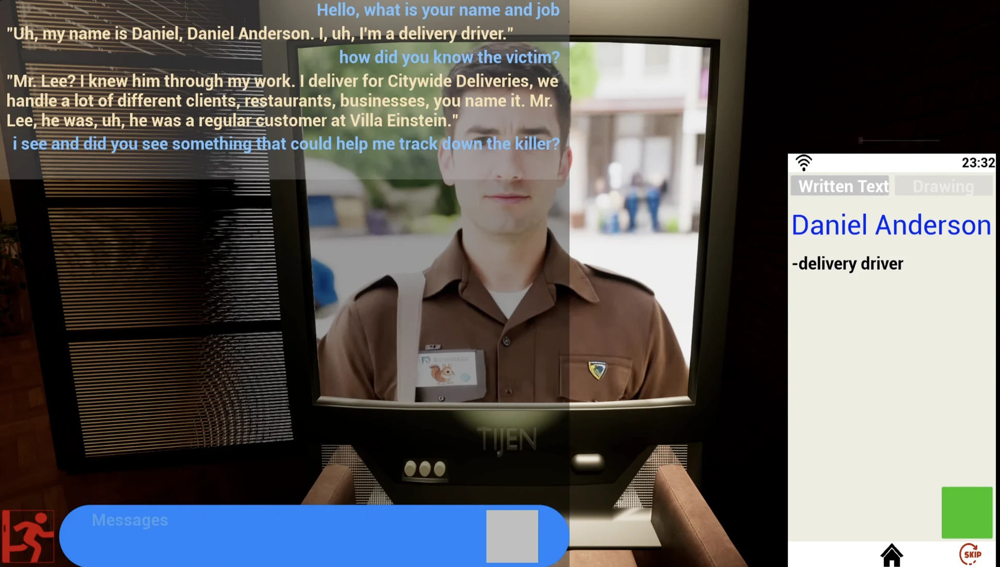

Game prototype · Unreal Engine 5
Neural Noir
A detective game with generated cases and suspect dialogue. Explore a villa, gather evidence, and test your accusation against the case.

Keeping interviews consistent with the case
Gemini generates suspects, motives, a timeline, and the solution. Characters and clues refer to that case throughout the investigation.
The final verdict also uses the case to assess your accusation. Dialogue can be open-ended while the underlying events remain fixed.

Gameplay
Investigating a case
Watch Neural Noir on YouTube ↗
- Set the caseA chosen theme becomes suspects, clues, and a hidden solution.
- Follow the evidenceExplore rooms, inspect objects, and question the people involved.
- Make an accusationThe verdict checks your reasoning against the generated case.